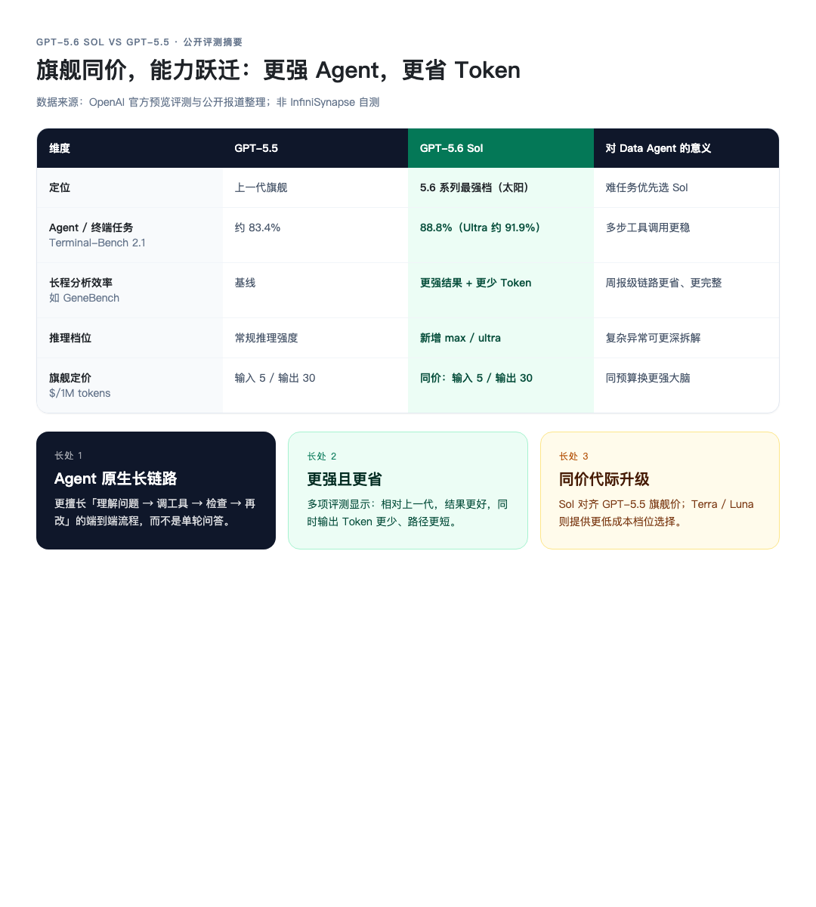
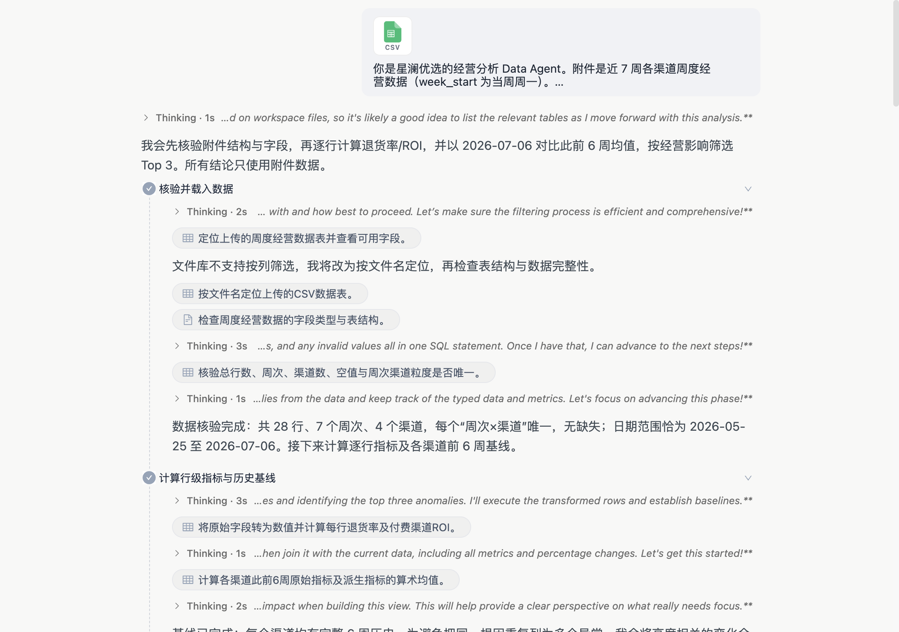
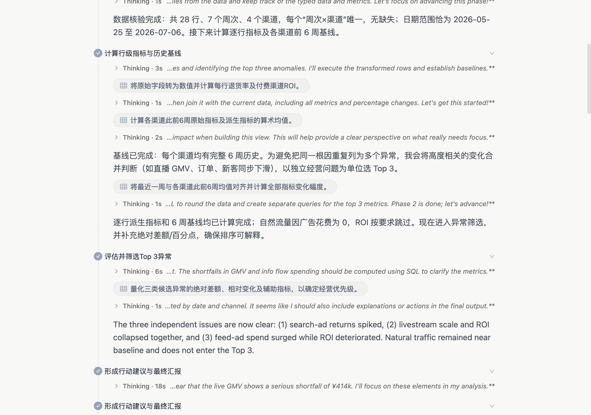
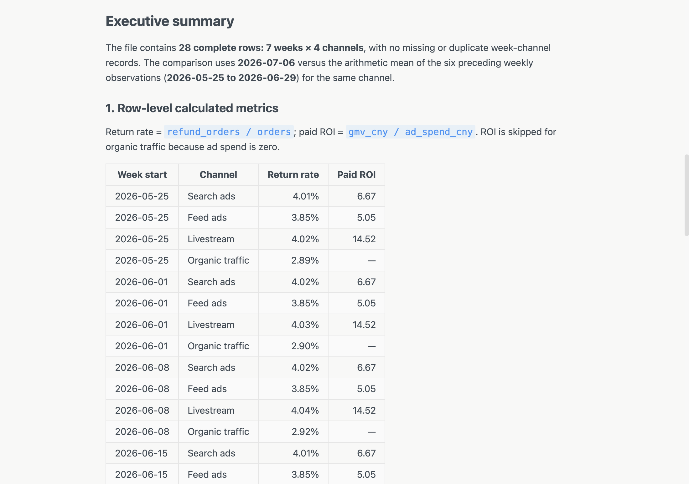
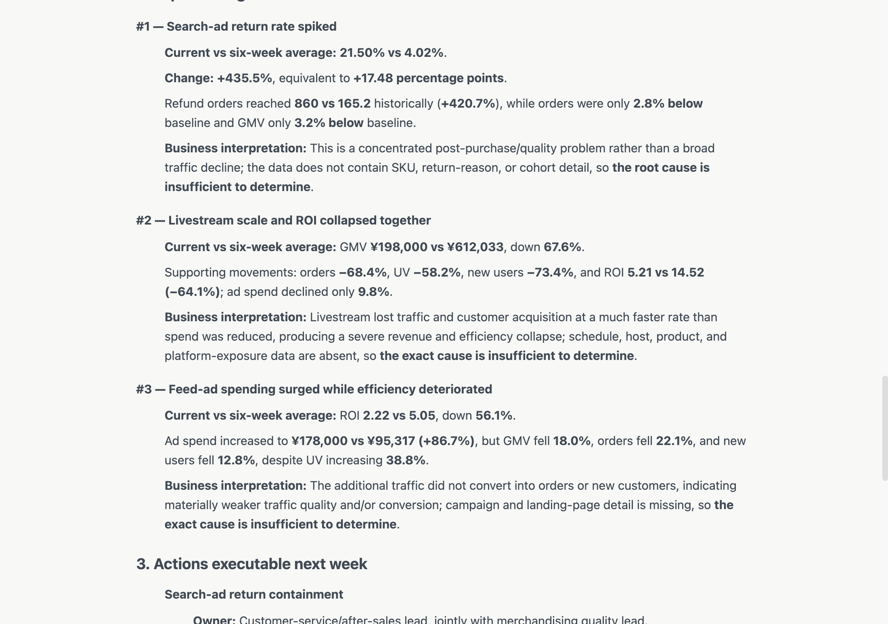
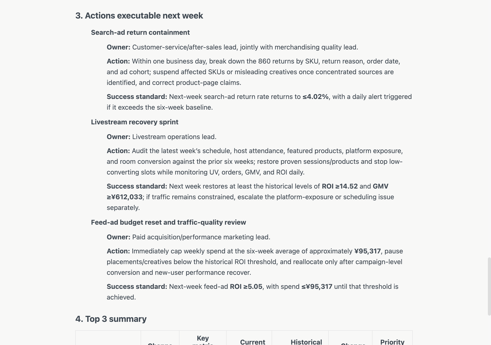
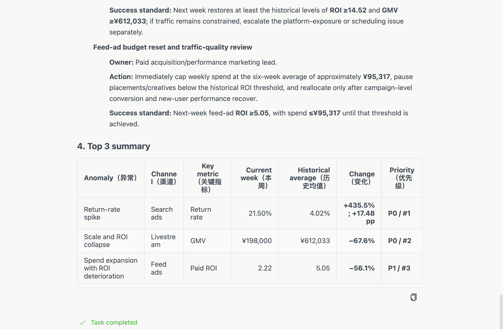

InfiniSynapse 官方 · 2026 年 7 月 · 产品更新
GPT 5.6 Sol 发布了。
多数人会先拿它聊天、写文案、解一道题。我们做了一件更贴 InfiniSynapse 定位的事：把它接进 Data Agent ，丢进去一张经营周报表，只问一句业务问题。
不是多一个聊天模型。是分析链路换了更强的推理引擎。
下面所有任务截图，均来自同一条真实任务界面（可公开复现）。[1]
OpenAI 把 GPT‑5.6 拆成三档：Sol （旗舰）/ Terra （均衡）/ Luna （轻量）。 Sol 是太阳档——面向最难的长链路任务。[2]
对照公开评测与报道，相对上一代旗舰 GPT‑5.5， Sol 的长处可以收成三句：
另外， Sol 新增更高强度推理档位（含 max，以及可并行拆任务的 ultra），专门给「拆不开、一步做不完」的难任务留余量。[2][4]

图 1 ： Sol vs GPT‑5.5 公开评测摘要（官方与媒体报道整理）
⚡ 对 Data Agent 意味着什么
经营异常诊断正是典型的长链路 Agent 活：核验数据、算指标、建基线、合并同源异常、排优先级、写可执行动作。 Sol 的优势，正好打在这条链路上。
业界讨论里也常提到： Sol 在 Agent / 终端 / 浏览与电脑操作 类任务上推进明显；个别仓库级编程或超难数学题上，竞品仍可能占优——所以我们不把它神化成「全能第一」，而是强调：在 Data Agent 这种多步分析交付场景里，它是更合适的大脑。[3][4]
通用大模型擅长「说清楚」；经营现场要的是「算清楚，再敢给建议」。
一张渠道周报里，退货率、 ROI 、 GMV 、花费、 UV 、新客缠在一起。人眼扫一遍，容易被「哪个数字最大」带跑；真正该问的是：
这正是 Data Agent 的工作：读表 → 派生指标 → 对比基线 → 合并同源异常 → 输出可执行动作。
InfiniSynapse × GPT 5.6 Sol ：不是多一个对话框，是经营分析链路换了更强的大脑。
我们准备了一份虚构 DTC 「星澜优选」的样例数据：近 7 周 × 4 渠道（搜索广告、信息流、直播、自然流量），字段包括 GMV 、订单、退货订单、广告花费、 UV 、新客。
在 InfiniSynapse 任务里：上传 CSV → 选择 GPT 5.6 Sol → 粘贴经营问题 Prompt 。
任务界面一开始就会给出执行计划，并进入数据核验：

图 2 ：任务界面截图——附件 CSV + 经营分析 Prompt + 核验载入
Prompt 的核心要求：
任务不会直接甩结论。界面里可以看到它先算行级指标与 6 周基线，再把高度相关的变化合并成独立经营问题，最后才筛 Top 3 ：

图 3 ：任务界面截图——计算退货率 / ROI 、建立 6 周基线、筛选 Top 3
交付前还会先给出 Executive summary ，并列出逐行派生指标，方便复核：

图 4 ：任务界面截图——数据范围说明、公式与行级指标表
跑完之后， Sol 把问题收敛成三个独立经营异常：

图 5 ：任务界面截图——搜索退货飙升、直播 GMV 断崖、信息流 ROI 恶化
简要对照：
自然流量本周基本贴近基线，没有进入 Top 3——说明模型不是「凡是波动都报警」，而是在做经营优先级判断。
找异常只是一半。经营团队真正要的是：下周谁做什么，做到什么算成功。

图 6 ：任务界面截图——三条动作均含 Owner / Action / Success standard
任务给出的动作方向包括：
最后用一张汇总表收束，并标记 Task completed ：

图 7 ：任务界面截图——Top 3 summary 与 Task completed
💡 Data Agent 的交付标准
好的分析交付不是「又写了一段洞察」，而是：异常可复核 + 动作可执行 + 成功标准可验收。
把公开评测里的「长处」，映射回这次经营任务，你会看到同一套能力：
| Sol 的公开长处 | 这次任务里对应的表现 |
|---|---|
| 更强 Agent 长链路 | 核验 → 基线 → 合并同源异常 → Top 3 → 动作，一步没断 |
| 更强且更省 | 结论可复核，不堆无关波动；自然流量被正确排除 |
| 同价换代 | InfiniSynapse 里直接选 Sol ， Data Infra 链路不用重搭 |
如果你在用 InfiniSynapse ：
如果你想自己复现本次演示：打开分享任务看完整过程 [1]，或使用同目录样例 CSV + Prompt 自行跑一遍。
说明：文中经营数据为演示样例，非真实商家经营数据；任务配图均为该任务界面真实截图。评测数字来自公开资料，非 InfiniSynapse 内部基准。
模型发布日最容易做的内容，是「我们也接入了」。
更难、也更值得做的，是证明：接入之后，它能在真实工作流里多干成一件事。
公开评测说 Sol 更强 Agent 、更省 Token 、同价换代；我们用一张经营周报验证的是——它真的能把异常算清楚，并把动作写到可验收。
小事做透，才是 Data Agent 该有的发布姿势。
参考链接
[1] 演示任务分享页：https://app.infinisynapse.com/tasks?taskId=84e23c27-bb9a-4bcf-883f-88fee21de315&share=1
[2] OpenAI ：《 Previewing GPT-5.6 Sol: a next-generation model 》：https://openai.com/index/previewing-gpt-5-6-sol/
[3] 新浪财经整理报道（含 Agents' Last Exam 、 Terminal-Bench 等对比）：https://finance.sina.com.cn/roll/2026-07-10/doc-inihhkum8391902.shtml
[4] 钛媒体：《 GPT-5.6 ：最强的模型，最窄的门》：https://www.tmtpost.com/8043420.html
[5] DataLearnerAI 模型页（评测与参数汇总）：https://www.datalearner.com/ai-models/pretrained-models/gpt-5-6-sol